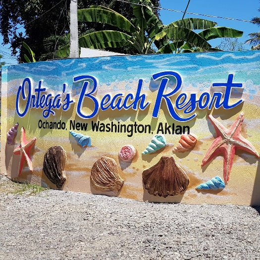
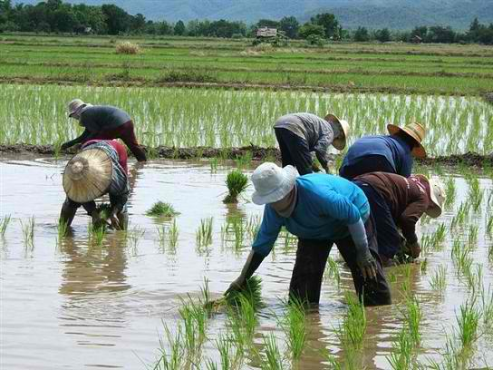
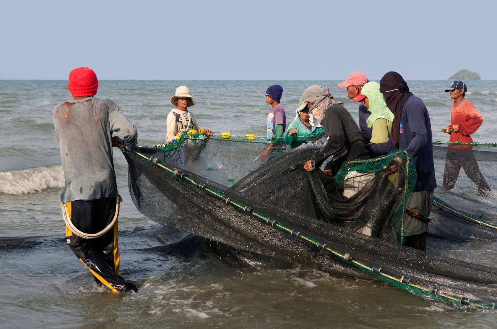

Explore New Washington
History and Culture
NATIONAL SHRINE OF SANDUGUAN

More locally known in its Spanish term, Pacto de Sangre and by the official term by the National Historical Commission as Sanduguan.
This historical marker located in Sitio Kuntang, Barangay Ochando commemorates the historic event that happened on March 3, 1887,
which fueled the patriotic spirit of the local revolutionaries to defy Aklanon Katipuneros expressed their strong defiance against
Spain by way of tearing the cedula personal and signing a document in their cause. The document was a manuscript of revolutionary
declaration of the Philippine Independence. The Katipuneros were Romualdo Dalida, Isidro Jimenez, Cornelio Delfin, Valeriano Dalida,
Benito Motus and Juan Dalida, all natives of Fonda Lagatik (now New Washington), Capiz, now known as Aklan.
The shrine was recently recognized as National Historical landmark by the National Historical Commission in 2015 through the effort
of Sanguaniang Bayan member then – Jessica Panambo and through the leadership of the Municipality’s mayor, Atty. Edgar Peralta. A visit
to the place which is hidden away from the highway will surely invoke the inner patriotic spirit in you.
Faith & Pilgrims
STATUE OF HIS EMINENCE JAIME CARDINAL L. SIN
This 22-ft. bronze statue of the late Jaime Cardinal Lachica Sin, a beloved New Washington, grabbed in full prelate vestment, conspicuously
stands in the corner of the Municipal Plaza facing the Shrine of Our Lady of the Most Holy Rosary as if to pay homage to Christ and the Catholic
Church. Serving as the Archbishop of Manila until his death in 2005, Cardinal Sin was a charismatic leader of the Roman Catholic Church and was
well-known for his influential role in the 1986 EDSA People Power Revolution, the world-renowned bloodless revolt which toppled down and put an
end to the long-standing Marcos regime.
The Monument, which was the first ever recognized historical landmark in the municipality by no less than the National Historical Commission,
has been attracting not only local tourists and members of the diplomatic community from many parts of the world. Looking at the vast structure
a top a three-pronged dais where the Cardinal's biography and the account of the People Power Revolution was carefully inscribed, one cannot help
but marvel at how Cardinal Sin had been a very important figure in weaving the Nation's recent history. Something his town mates will forever be
proud of. For the people of New Washington, he will always be remembered as the good old cardinal with his good-nature character and his ever welcoming smile.
DIOCESAN SHRINE OF OUR LADY OF THE MOST HOLY ROSARY
The parish of our Lady of the Most Holy Rosary was established on 1911. The original and old Parish Church was replaced by the existing Church and was declared as a Diocesan Shrine in October of 1984 in honor of our Lady of the Most Holy Rosary.
IMMACULATE ADORACION CONVENT KNOWS AS CONVENT OF PINK SISTERS
Located in Barangay Polo, New Washington, Aklan. The convent is home to the Sisters Servants of the Holy Spirit of Perpetual-Adoration, more commonly
known as "PINK SISTERS", obviously named after their rose-colored habits. The cloistered nuns live a contemplative life, focus on perpetual adoration of
the Blessed Sacrament, offering intercessory prayers for the world. It has a modest chapel where the religious can celebrate mass amid the angelic voices
of the nuns. They also accept prayer requests for special intentions and favors.
The Pink Sister Convent can really capture one's soul with its quiet, unassuming atmosphere. The tranquility and peacefulness of the place offers anyone
the opportunity to really pick up the pieces of their heart, search their soul and reconnect themselves with God. Indeed, it is a place of peace and quiet
a sanctuary where your soul can joyfully back in God's goodness and mercy.
MISSIONARIES OF CHARITY
Located along the outskirts of Barangay Poblacion and Polo, this institutions built an answer to the late Cardinal's plea top Mother Teresa, the recently canonized saint of Calcutta for a shelter where the destitute can be cared for. Run the Missionaries of Charity from her and other countries, this humble edifice cares the abandoned children and sickly, aged people. True the Saint Teresa's call. This is where they can find solace in their remaining lives.
Recreational Facilities
RAFAELA’S GARDEN
This is your home away from home which can cater you a therapeutic environment because of its landscapes – perfect for a quick getaway for the tranquility of the mind and body. The Rafaela’s Garden offers a relaxing family-friendly getaway in the quiet countryside in Brgy. Ochando of the Municipality. It offers ten luxury rooms with 20 beds having swimming pools and cottages within the area. It also has a Pavilion that is perfect for any private gatherings and the location that is only walking distance from the front beach makes it more special. With still the presence of CoVid-19, rest assured that the staffs within the vicinity are 100% vaccinated.
JODAN VILL INLAND RESORT

Garden resort a 2 hectare area with human size superheroes cement structure and a lot more OF instagrammable structure for pictures. With restaurant, rooms swimming Pool and function rooms. This establishment has restaurant, function room, trees for shading. Recyclable materials were used for some structure and decoration of the establishment.
ORTEGA'S BEACH RESORT
Situated at Ochando, New Washington with amenities of pool, conference hall, native cottages and 20 beds.
Gastronomic Foods
TALABAHAN FOOD VILLAGE – TAMBAK, NEW WASHINGTON
To date, there are 19 establishments in Tambak, New Washington. Located along the coastal highway in Sitio Saugan, Barangay Tambak, this long stretch
of food stalls is fast becoming the place to be for seafood trip especially oyster indulgence. Established on July 16 of 2016 through a spontaneous event
through a couple who purchased talaba alone and searched for a bowl of rice, then the same scenario happened for continuous days until the vendors named Boy
Negro and wife decided to install tables. A couple was there first costumer who gave them the idea of establishing this food stalls. The said couple were
only supposed to look for talaba yet asked for some left over rice and the same scenario happened but with a bottle of cola with them. Days later, there are
some additional people who are also interested on the same idea of the couple. Until, August 23, 2016, the local government unit have noticed that the said
venture started mushrooming at 17 small establishments already. On December of 2016, record states that there are already 39 small and big establishments.
After this, the local government unit started to build up an organization of this talabahan food village. Numerous nipa and bamboo food stalls and quiet
number of concrete commercial establishments see to be mushrooming around the place in the blink of an eye attracting not just local patrons but also and
more so, dinners by the nearby capital towns of Kalibo and other municipalities and also foreign tourist who make a deliberate side trip just to try the place.
This type of al fresco dining appeals to food enthusiast who enjoys dining out with loved ones, family, friends, co-workers and just about anyone amid the
breathtaking panoramic view of the Sibuyan sea, enjoying the sweet salty wind, the exhilarating view of the horizon, the gentle lapping or the vigorous crashing
of the waves in the shore, the sun in its glory or the cloudy skies during the day and the starry skies, the nocturnal feel and the blinking lights of fishing boats
away at sea at night time. A stroll along the beach promenade evokes a feeling of serenity for everyone's tired soul. Surely, with its easy access by the way of
the national highway that is Cardinal Sin Avenue, this current popular food trip happening is a welcome phenomenon as it brought about an alternative product
livelihood to the former sleepy fishing vessel. To date
BALAI LANAZ – Jugas, New Washington
Located at Jugas and situated within the farmland and nipa hut.
SULUNA RESTAURANT – Mabilo, New Washington
Suluna is the first establishment in Aklan who serves different types of cuisines with a pool view located in Mabilo, New Washington, Aklan for almost 3 years. Menu pays homage to all-time favorite Asian Fusion cuisines, yummy desserts and refreshing drinks that is nostalgic taste that makes you feel at home, bright up your day and brings your family closer.
PAYAG – Jugas, New Washington
Nestled ver the green and luscioys rice field of Jugas New Washington, Payag is an alfresco restaurant that offers classic Filipino
comfort food and all-time favorite local/regional delicacies at a very affordable price. Bringing you a gastronomic feast of beautiful
and delectable flavors. Established in October 2020 that started with only a seating capacity of 30 has now expanded up to 120 capacity.
Its aesthetic is geared towards the concept of showcasing the barrio feels and the relaxing vibe brought by the nature itself, it is a sweet escape for people who want to take a break from the hustle and bustle. Owned and managed by Mr. and Mrs. Milbert & Mary Ann Ricaforte, both an ex-OFW who came back home after being affected by the economic crisis of the pandemic. They have used their skills and profession to bounce back and rise again amidst this trying time. Payag lives with the mantra "gastronomic feast without hurting your pocket, because great food doesn't have to be expensive."
BARRIOSCAPE PEARLSOL-Guinbaliwan, New Washington, Aklan
Sa Barrioscape Pearlsol nga restobar, madayad ag malimpyo ro lugar. Indi ka magnuoe kung ikaw hinaeang, matam-is nga hibayag kimo gasubeang. Presko nga hangin mabatyagan, berdeng pananom galibot eang. Kung ikaw hay magpalitrato, indi ka magnuoe sa profile pic mo. Daeha si nene ag si toto, bitbita man si lolo ag lola. Indi kalipati si tatay ag nanay, sanda gid tanan sa Barrioscape Pearlsol malipay.
Other Gastronomic Establishments
- JUNKSTER
- TORCH CAFÉ
- SHIBERT’S
- JENSKIE
- MIKEL AND RANDY’S TALABAHAN
- BABYLOVE TALABAHAN
- TALABAHAN NI NANAY SENIA
- KENSHIEN RESTAURANT
Fishery, Agriculture & Farming
 New Washington's primary economic source is shared by two (2) industires: Agriculture & Aquaculture. The Municipality is known as the "Rice-Granary of Aklan" because it holds wildest irrigated farmland in the Province. It is also the "Seafood Capital of Aklan" because 7 out of 16 barangays are coastal area facing Sibuyan River where various agricultural and marine culture activites thrives. The municipality can be considered as fishery and agri-tourism area becuase of its geographical location resrources.
Nature Attraction
New Washington existing biodiversity area of 33 hectares located at Isla Kapispisan, Pinamuk-an. It is declared earlier as Fish Sanctuary and also an eco-torusim site for educational and scientific research activities.